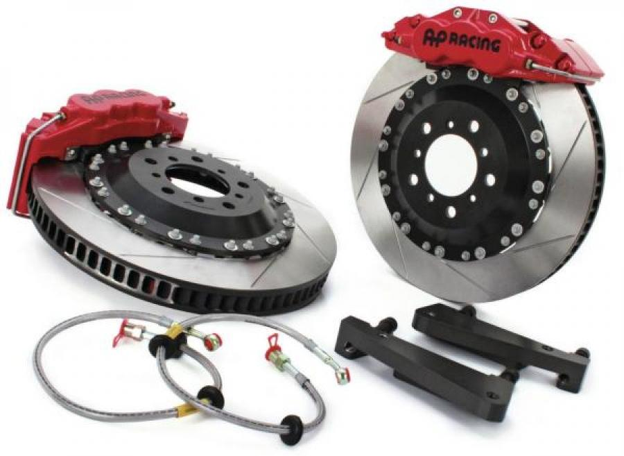

СХЕМА И УСТРОЙСТВО ТОРМОЗНОЙ СИСТЕМЫ - ПРИНЦИП РАБОТЫ ТОРМОЗНОЙ СИСТЕМЫ НЕИСПРАВНОСТИ ТОРМОЗНОЙ СИСТЕМЫ АВТОМОБИЛЯ ШУМ И ВИБРАЦИЯ ПЕДАЛИ ПРИ НАЖАТИИ ТОРМОЗА ЭФФЕКТИВНОСТЬ ТОРМОЗОВ УПАЛА, А ДЛИНА СВОБОДНОГО ХОДА ПЕДАЛИ УВЕЛИЧИЛАСЬ РУЧНОЙ ТОРМОЗ НЕ УДЕРЖИВАЕТ АВТОМОБИЛЬ
Основным залогом безопасности являются тормоза. Ведь именно тормозная система любого современного автомобиля отвечает за управляемость транспортного средства на больших скоростях и в случае острой необходимости, может быстро остановить автомобиль и защитить от неприятностей всех участников движения. В этой статье мы разберем, из каких элементов состоит тормозная система, какие ей соответствуют неисправности и как их устранить?
Автомобильные тормоза состоят из системы гидравлических элементов, которые обеспечивают частичную или полную блокировку колес при движении. Простейшие тормоза состоят из самой педали тормоза, которая монтируется в районе ног салона автомобиля, главного тормозного цилиндра (в некоторых случаях может быть оснащен вакуумным усилителем), на верхней части которого установлен бачок, тормозных магистралей и рабочих механизмов.
При воздействии ногой на педаль, поршень, который находится в главном тормозном цилиндре, создает давление, под действием которого специальная жидкость движется по магистралям и воздействует на рабочие механизмы тормозной системы. Рабочий механизм состоит из рабочего тормозного цилиндра и исполняющих устройств – колодок. Поршни в цилиндрах воздействуют на колодки и они, благодаря силе трения, останавливают тормозной диск или барабан. В результате, происходит блокировка колес и они останавливаются. В зависимости от силы нажатия на педаль тормоза, меняется и степень нажатия колодок на диск или барабан. Как только мы отпускаем педаль тормоза, все поршни, во всех тормозных цилиндрах, под действием специальных пружин возвращаются в исходное положение, таким образом, жидкость уходит обратно, и колодки растормаживают вращающийся рабочий механизм.
Современные автомобили предусматривают контурное распределение тормозной жидкости. Это означает, что в тормозном цилиндре имеются две секции, каждая из которых отвечает за два колеса. В современных автомобилях жидкость распределяется на переднее правое и заднее левое колесо, а также на переднее левое и заднее правое колесо. В автомобилях классической компоновки, тормозная жидкость распределяется на передние и задние колеса. Такой подход необходим для обеспечения повышенной безопасности водителя, в случае частичного отказа тормозной системы. Если жидкость внезапно стало протекать в одном из контуров или колесе, то в работе остаются другие колеса, которые по-прежнему обладают исправной рабочей тормозной системой.
Кроме того, меры безопасности заключаются в возможности использовать ручной тормоз, как основной. Дело в том, что он приводится в действие посредством крепкого троса, который меняет положение колодок задних колес независимо от наличия тормозной жидкости в системе. То есть, если откажут все четыре колеса одновременно, то имеется возможность использования ручного тормоза, который может значительно снизить скорость автомобиля.
.png)